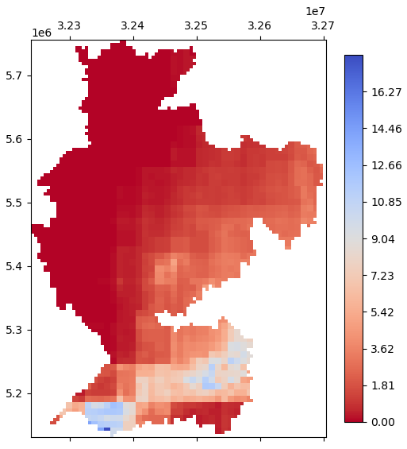
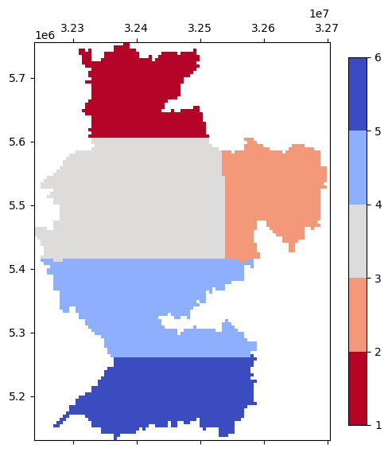
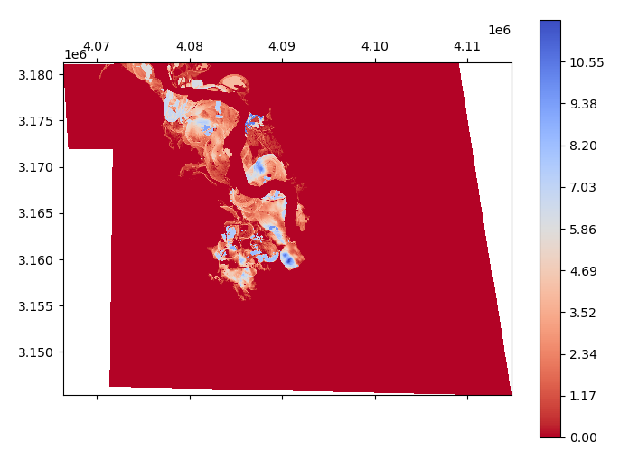
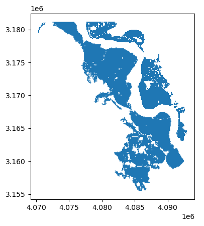

Analysis & Statistics#
Statistics, extraction, overlay, apply, fill, histogram, and plotting.
Lazy per-pixel operations#
Every neighbourhood op on Dataset accepts a chunks= kwarg that
routes through dask.array.map_overlap:
from pyramids.dataset import Dataset
dem = Dataset.read_file("dem.tif")
slope_eager = dem.slope() # numpy array (default)
slope_lazy = dem.slope(chunks=(1024, 1024)) # dask.array.Array
| Method | Dask path gated on chunks= |
|---|---|
ds.focal_mean |
Yes |
ds.focal_std |
Yes (two-pass numerically stable) |
ds.focal_apply(func, ...) |
Yes (user kernel) |
ds.slope, ds.aspect, ds.hillshade |
Yes |
ds.zonal_stats(fc, ...) |
Eager FC required — call .compute() |
See Lazy rasters
for chunk-size rules and kernel examples. zonal_stats is covered in
its own section.
pyramids.dataset._collaborators.Analysis
#
Bases: _Collaborator
Mixin providing analysis, statistics, and data extraction operations for Dataset.
Source code in src/pyramids/dataset/_collaborators.py
3420 3421 3422 3423 3424 3425 3426 3427 3428 3429 3430 3431 3432 3433 3434 3435 3436 3437 3438 3439 3440 3441 3442 3443 3444 3445 3446 3447 3448 3449 3450 3451 3452 3453 3454 3455 3456 3457 3458 3459 3460 3461 3462 3463 3464 3465 3466 3467 3468 3469 3470 3471 3472 3473 3474 3475 3476 3477 3478 3479 3480 3481 3482 3483 3484 3485 3486 3487 3488 3489 3490 3491 3492 3493 3494 3495 3496 3497 3498 3499 3500 3501 3502 3503 3504 3505 3506 3507 3508 3509 3510 3511 3512 3513 3514 3515 3516 3517 3518 3519 3520 3521 3522 3523 3524 3525 3526 3527 3528 3529 3530 3531 3532 3533 3534 3535 3536 3537 3538 3539 3540 3541 3542 3543 3544 3545 3546 3547 3548 3549 3550 3551 3552 3553 3554 3555 3556 3557 3558 3559 3560 3561 3562 3563 3564 3565 3566 3567 3568 3569 3570 3571 3572 3573 3574 3575 3576 3577 3578 3579 3580 3581 3582 3583 3584 3585 3586 3587 3588 3589 3590 3591 3592 3593 3594 3595 3596 3597 3598 3599 3600 3601 3602 3603 3604 3605 3606 3607 3608 3609 3610 3611 3612 3613 3614 3615 3616 3617 3618 3619 3620 3621 3622 3623 3624 3625 3626 3627 3628 3629 3630 3631 3632 3633 3634 3635 3636 3637 3638 3639 3640 3641 3642 3643 3644 3645 3646 3647 3648 3649 3650 3651 3652 3653 3654 3655 3656 3657 3658 3659 3660 3661 3662 3663 3664 3665 3666 3667 3668 3669 3670 3671 3672 3673 3674 3675 3676 3677 3678 3679 3680 3681 3682 3683 3684 3685 3686 3687 3688 3689 3690 3691 3692 3693 3694 3695 3696 3697 3698 3699 3700 3701 3702 3703 3704 3705 3706 3707 3708 3709 3710 3711 3712 3713 3714 3715 3716 3717 3718 3719 3720 3721 3722 3723 3724 3725 3726 3727 3728 3729 3730 3731 3732 3733 3734 3735 3736 3737 3738 3739 3740 3741 3742 3743 3744 3745 3746 3747 3748 3749 3750 3751 3752 3753 3754 3755 3756 3757 3758 3759 3760 3761 3762 3763 3764 3765 3766 3767 3768 3769 3770 3771 3772 3773 3774 3775 3776 3777 3778 3779 3780 3781 3782 3783 3784 3785 3786 3787 3788 3789 3790 3791 3792 3793 3794 3795 3796 3797 3798 3799 3800 3801 3802 3803 3804 3805 3806 3807 3808 3809 3810 3811 3812 3813 3814 3815 3816 3817 3818 3819 3820 3821 3822 3823 3824 3825 3826 3827 3828 3829 3830 3831 3832 3833 3834 3835 3836 3837 3838 3839 3840 3841 3842 3843 3844 3845 3846 3847 3848 3849 3850 3851 3852 3853 3854 3855 3856 3857 3858 3859 3860 3861 3862 3863 3864 3865 3866 3867 3868 3869 3870 3871 3872 3873 3874 3875 3876 3877 3878 3879 3880 3881 3882 3883 3884 3885 3886 3887 3888 3889 3890 3891 3892 3893 3894 3895 3896 3897 3898 3899 3900 3901 3902 3903 3904 3905 3906 3907 3908 3909 3910 3911 3912 3913 3914 3915 3916 3917 3918 3919 3920 3921 3922 3923 3924 3925 3926 3927 3928 3929 3930 3931 3932 3933 3934 3935 3936 3937 3938 3939 3940 3941 3942 3943 3944 3945 3946 3947 3948 3949 3950 3951 3952 3953 3954 3955 3956 3957 3958 3959 3960 3961 3962 3963 3964 3965 3966 3967 3968 3969 3970 3971 3972 3973 3974 3975 3976 3977 3978 3979 3980 3981 3982 3983 3984 3985 3986 3987 3988 3989 3990 3991 3992 3993 3994 3995 3996 3997 3998 3999 4000 4001 4002 4003 4004 4005 4006 4007 4008 4009 4010 4011 4012 4013 4014 4015 4016 4017 4018 4019 4020 4021 4022 4023 4024 4025 4026 4027 4028 4029 4030 4031 4032 4033 4034 4035 4036 4037 4038 4039 4040 4041 4042 4043 4044 4045 4046 4047 4048 4049 4050 4051 4052 4053 4054 4055 4056 4057 4058 4059 4060 4061 4062 4063 4064 4065 4066 4067 4068 4069 4070 4071 4072 4073 4074 4075 4076 4077 4078 4079 4080 4081 4082 4083 4084 4085 4086 4087 4088 4089 4090 4091 4092 4093 4094 4095 4096 4097 4098 4099 4100 4101 4102 4103 4104 4105 4106 4107 4108 4109 4110 4111 4112 4113 4114 4115 4116 4117 4118 4119 4120 4121 4122 4123 4124 4125 4126 4127 4128 4129 4130 4131 4132 4133 4134 4135 4136 4137 4138 4139 4140 4141 4142 4143 4144 4145 4146 4147 4148 4149 4150 4151 4152 4153 4154 4155 4156 4157 4158 4159 4160 4161 4162 4163 4164 4165 4166 4167 4168 4169 4170 4171 4172 4173 4174 4175 4176 4177 4178 4179 4180 4181 4182 4183 4184 4185 4186 4187 4188 4189 4190 4191 4192 4193 4194 4195 4196 4197 4198 4199 4200 4201 4202 4203 4204 4205 4206 4207 4208 4209 4210 4211 4212 4213 4214 4215 4216 4217 4218 4219 4220 4221 4222 4223 4224 4225 4226 4227 4228 4229 4230 4231 4232 4233 4234 4235 4236 4237 4238 4239 4240 4241 4242 4243 4244 4245 4246 4247 4248 4249 4250 4251 4252 4253 4254 4255 4256 4257 4258 4259 4260 4261 4262 4263 4264 4265 4266 4267 4268 4269 4270 4271 4272 4273 4274 4275 4276 4277 4278 4279 4280 4281 4282 4283 4284 4285 4286 4287 4288 4289 4290 4291 4292 4293 4294 4295 4296 4297 4298 4299 4300 4301 4302 4303 4304 4305 4306 4307 4308 4309 4310 4311 4312 4313 4314 4315 4316 4317 4318 4319 4320 4321 4322 4323 4324 4325 4326 4327 4328 4329 4330 4331 4332 4333 4334 4335 4336 4337 4338 4339 4340 4341 4342 4343 4344 4345 4346 4347 4348 4349 4350 4351 4352 4353 4354 4355 4356 4357 4358 4359 4360 4361 4362 4363 4364 4365 4366 4367 4368 4369 4370 4371 4372 4373 4374 4375 4376 4377 4378 4379 4380 4381 4382 4383 4384 4385 4386 4387 4388 4389 4390 4391 4392 4393 4394 4395 4396 4397 4398 4399 4400 | |
stats(band=None, mask=None)
#
Get statistics of a band [Min, max, mean, std].
Parameters:
| Name | Type | Description | Default |
|---|---|---|---|
band
|
int
|
Band index. If None, the statistics of all bands will be returned. |
None
|
mask
|
Polygon GeoDataFrame or Dataset
|
GeodataFrame with a geometry of polygon type. |
None
|
Returns:
| Name | Type | Description |
|---|---|---|
DataFrame |
DataFrame
|
DataFrame wit the stats of each band, the dataframe has the following columns [min, max, mean, std], the index of the dataframe is the band names. |
Notes
- The value of the stats will be stored in an xml file by the name of the raster file with the extension of .aux.xml.
- The content of the file will be like the following:
<PAMDataset>
<PAMRasterBand band="1">
<Description>Band_1</Description>
<Metadata>
<MDI key="RepresentationType">ATHEMATIC</MDI>
<MDI key="STATISTICS_MAXIMUM">88</MDI>
<MDI key="STATISTICS_MEAN">7.9662921348315</MDI>
<MDI key="STATISTICS_MINIMUM">0</MDI>
<MDI key="STATISTICS_STDDEV">18.294377743948</MDI>
<MDI key="STATISTICS_VALID_PERCENT">48.9</MDI>
</Metadata>
</PAMRasterBand>
</PAMDataset>
Examples:
- Get the statistics of all bands in the dataset:
>>> import numpy as np
>>> arr = np.random.rand(4, 10, 10)
>>> geotransform = (0, 0.05, 0, 0, 0, -0.05)
>>> dataset = Dataset.create_from_array(arr, geo=geotransform, epsg=4326)
>>> print(dataset.stats()) # doctest: +SKIP
min max mean std
Band_1 0.006443 0.942943 0.468935 0.266634
Band_2 0.020377 0.978130 0.477189 0.306864
Band_3 0.019652 0.992184 0.537215 0.286502
Band_4 0.011955 0.984313 0.503616 0.295852
>>> print(dataset.stats(band=1)) # doctest: +SKIP
min max mean std
Band_2 0.020377 0.97813 0.477189 0.306864
-
Get the statistics of all the bands using a mask polygon.
-
Create the polygon using shapely polygon, and use the xmin, ymin, xmax, ymax = [0.1, -0.2, 0.2 -0.1] to cover the 4 cells.
>>> from shapely.geometry import Polygon >>> import geopandas as gpd >>> mask = gpd.GeoDataFrame(geometry=[Polygon([(0.1, -0.1), (0.1, -0.2), (0.2, -0.2), (0.2, -0.1)])],crs=4326) >>> print(dataset.stats(mask=mask)) # doctest: +SKIP min max mean std Band_1 0.193441 0.702108 0.541478 0.202932 Band_2 0.281281 0.932573 0.665602 0.239410 Band_3 0.031395 0.982235 0.493086 0.377608 Band_4 0.079562 0.930965 0.591025 0.341578
Source code in src/pyramids/dataset/_collaborators.py
3423 3424 3425 3426 3427 3428 3429 3430 3431 3432 3433 3434 3435 3436 3437 3438 3439 3440 3441 3442 3443 3444 3445 3446 3447 3448 3449 3450 3451 3452 3453 3454 3455 3456 3457 3458 3459 3460 3461 3462 3463 3464 3465 3466 3467 3468 3469 3470 3471 3472 3473 3474 3475 3476 3477 3478 3479 3480 3481 3482 3483 3484 3485 3486 3487 3488 3489 3490 3491 3492 3493 3494 3495 3496 3497 3498 3499 3500 3501 3502 3503 3504 3505 3506 3507 3508 3509 3510 3511 3512 3513 3514 3515 3516 3517 3518 3519 3520 3521 3522 3523 3524 3525 3526 3527 3528 3529 3530 3531 3532 3533 3534 3535 | |
count_domain_cells(band=0)
#
Count cells inside the domain.
Parameters:
| Name | Type | Description | Default |
|---|---|---|---|
band
|
int
|
Band index. Default is 0. |
0
|
Returns:
| Name | Type | Description |
|---|---|---|
int |
int
|
Number of cells. |
Source code in src/pyramids/dataset/_collaborators.py
apply(func, band=0, inplace=False)
#
Apply a function to all domain cells.
- apply method executes a mathematical operation on the raster array.
- The function is applied to all domain cells at once using vectorized NumPy operations.
Parameters:
| Name | Type | Description | Default |
|---|---|---|---|
func
|
function
|
Defined function that takes one input (the cell value). |
required |
band
|
int
|
Band number. |
0
|
inplace
|
bool
|
If True, the original dataset will be modified. If False, a new dataset will be created. Default is False. |
False
|
Returns:
| Name | Type | Description |
|---|---|---|
Dataset |
Dataset
|
A new Dataset with the function applied. If inplace is True, returns self. |
Examples:
- Create a dataset from an array filled with values between -1 and 1:
>>> import numpy as np
>>> arr = np.random.uniform(-1, 1, size=(5, 5))
>>> top_left_corner = (0, 0)
>>> cell_size = 0.05
>>> dataset = Dataset.create_from_array(arr, top_left_corner=top_left_corner, cell_size=cell_size, epsg=4326)
>>> print(dataset.read_array()) # doctest: +SKIP
[[ 0.94997539 -0.80083622 -0.30948769 -0.77439961 -0.83836424]
[-0.36810158 -0.23979251 0.88051216 -0.46882913 0.64511056]
[ 0.50585374 -0.46905902 0.67856589 0.2779605 0.05589759]
[ 0.63382852 -0.49259597 0.18471423 -0.49308984 -0.52840286]
[-0.34076174 -0.53073014 -0.18485789 -0.40033474 -0.38962938]]
- Apply the absolute function to the dataset:
>>> abs_dataset = dataset.apply(np.abs)
>>> print(abs_dataset.read_array()) # doctest: +SKIP
[[0.94997539 0.80083622 0.30948769 0.77439961 0.83836424]
[0.36810158 0.23979251 0.88051216 0.46882913 0.64511056]
[0.50585374 0.46905902 0.67856589 0.2779605 0.05589759]
[0.63382852 0.49259597 0.18471423 0.49308984 0.52840286]
[0.34076174 0.53073014 0.18485789 0.40033474 0.38962938]]
Source code in src/pyramids/dataset/_collaborators.py
3573 3574 3575 3576 3577 3578 3579 3580 3581 3582 3583 3584 3585 3586 3587 3588 3589 3590 3591 3592 3593 3594 3595 3596 3597 3598 3599 3600 3601 3602 3603 3604 3605 3606 3607 3608 3609 3610 3611 3612 3613 3614 3615 3616 3617 3618 3619 3620 3621 3622 3623 3624 3625 3626 3627 3628 3629 3630 3631 3632 3633 3634 3635 3636 3637 3638 3639 3640 3641 3642 3643 3644 3645 3646 3647 3648 3649 3650 3651 3652 3653 3654 | |
fill(value, inplace=False, path=None)
#
Fill the domain cells with a certain value.
Fill takes a raster and fills it with one value
Parameters:
| Name | Type | Description | Default |
|---|---|---|---|
value
|
float | int
|
Numeric value to fill. |
required |
inplace
|
bool
|
If True, the original dataset will be modified. If False, a new dataset will be created. Default is False. |
False
|
path
|
str
|
Path including the extension (.tif). |
None
|
Returns:
| Name | Type | Description |
|---|---|---|
Dataset |
Dataset
|
A new Dataset with cells filled. If inplace is True, returns self. |
Examples:
- Create a Dataset with 1 band, 5 rows, 5 columns, at the point lon/lat (0, 0):
>>> import numpy as np
>>> arr = np.random.randint(1, 5, size=(5, 5))
>>> top_left_corner = (0, 0)
>>> cell_size = 0.05
>>> dataset = Dataset.create_from_array(arr, top_left_corner=top_left_corner, cell_size=cell_size, epsg=4326)
>>> print(dataset.read_array()) # doctest: +SKIP
[[1 1 3 1 2]
[2 2 2 1 2]
[2 2 3 1 3]
[3 4 3 3 4]
[4 4 2 1 1]]
>>> new_dataset = dataset.fill(10)
>>> print(new_dataset.read_array())
[[10 10 10 10 10]
[10 10 10 10 10]
[10 10 10 10 10]
[10 10 10 10 10]
[10 10 10 10 10]]
Source code in src/pyramids/dataset/_collaborators.py
extract(band=None, exclude_value=None, mask=None)
#
Extract.
- Extract method gets all the values in a raster, and excludes the values in the exclude_value parameter.
- If the mask parameter is given, the raster will be clipped to the extent of the given mask and the values within the mask are extracted.
Parameters:
| Name | Type | Description | Default |
|---|---|---|---|
band
|
int
|
Band index. Default is None. |
None
|
exclude_value
|
Numeric
|
Values to exclude from extracted values. If the dataset is multi-band, the values in |
None
|
mask
|
FeatureCollection | GeoDataFrame
|
Vector data containing point geometries at which to extract the values. Default is None. |
None
|
Returns:
| Type | Description |
|---|---|
ndarray
|
np.ndarray: The extracted values from each band in the dataset will be in one row in the returned array. |
Examples:
-
Extract all values from the dataset:
-
First, create a dataset with 2 bands, 4 rows and 4 columns:
>>> import numpy as np >>> arr = np.random.randint(1, 5, size=(2, 4, 4)) >>> top_left_corner = (0, 0) >>> cell_size = 0.05 >>> dataset = Dataset.create_from_array(arr, top_left_corner=top_left_corner, cell_size=cell_size, epsg=4326) >>> print(dataset) <BLANKLINE> Cell size: 0.05 Dimension: 4 * 4 EPSG: 4326 Number of Bands: 2 Band names: ['Band_1', 'Band_2'] Mask: -9999.0 Data type: int32 File:... <BLANKLINE> >>> print(dataset.read_array()) # doctest: +SKIP [[[1 3 3 4] [1 4 2 4] [2 4 2 1] [1 3 2 3]] [[3 2 1 3] [4 3 2 2] [2 2 3 4] [1 4 1 4]]] -
Now, extract the values in the dataset:
-
Extract all the values except 2:
-
Extract values at the location of the given point geometries:
-
Create the points using shapely and GeoPandas to cover the 4 cells with xmin, ymin, xmax, ymax = [0.1, -0.2, 0.2, -0.1]:
Source code in src/pyramids/dataset/_collaborators.py
3715 3716 3717 3718 3719 3720 3721 3722 3723 3724 3725 3726 3727 3728 3729 3730 3731 3732 3733 3734 3735 3736 3737 3738 3739 3740 3741 3742 3743 3744 3745 3746 3747 3748 3749 3750 3751 3752 3753 3754 3755 3756 3757 3758 3759 3760 3761 3762 3763 3764 3765 3766 3767 3768 3769 3770 3771 3772 3773 3774 3775 3776 3777 3778 3779 3780 3781 3782 3783 3784 3785 3786 3787 3788 3789 3790 3791 3792 3793 3794 3795 3796 3797 3798 3799 3800 3801 3802 3803 3804 3805 3806 3807 3808 3809 3810 3811 3812 3813 3814 3815 3816 3817 3818 3819 3820 3821 3822 3823 3824 3825 3826 3827 3828 3829 3830 | |
overlay(classes_map, band=0, exclude_value=None)
#
Overlay.
Overlay method extracts all the values in the dataset for each class in the given class map.
Parameters:
| Name | Type | Description | Default |
|---|---|---|---|
classes_map
|
Dataset
|
Dataset object for the raster that has classes you want to overlay with the raster. |
required |
band
|
int
|
If the raster is multi-band, choose the band you want to overlay with the classes map. Default is 0. |
0
|
exclude_value
|
Numeric
|
Values you want to exclude from extracted values. Default is None. |
None
|
Returns:
| Name | Type | Description |
|---|---|---|
Dict |
dict[list[float], list[float]]
|
Dictionary with class values as keys (from the class map), and for each key a list of all the intersected values in the base map. |
Examples:
- Read the dataset:
>>> dataset = Dataset.read_file("examples/data/geotiff/raster-folder/MSWEP_1979.01.01.tif")
>>> dataset.plot(figsize=(6, 8)) # doctest: +SKIP

- Read the classes dataset:
>>> classes = Dataset.read_file("examples/data/geotiff/rhine-classes.tif")
>>> classes.plot(figsize=(6, 8), color_scale=4, bounds=[1,2,3,4,5,6]) # doctest: +SKIP

- Overlay the dataset with the classes dataset:
>>> classes_dict = dataset.overlay(classes)
>>> print(classes_dict.keys()) # doctest: +SKIP
dict_keys([1, 2, 3, 4, 5])
- You can use the key
1to get the values that overlay class 1.
Source code in src/pyramids/dataset/_collaborators.py
3832 3833 3834 3835 3836 3837 3838 3839 3840 3841 3842 3843 3844 3845 3846 3847 3848 3849 3850 3851 3852 3853 3854 3855 3856 3857 3858 3859 3860 3861 3862 3863 3864 3865 3866 3867 3868 3869 3870 3871 3872 3873 3874 3875 3876 3877 3878 3879 3880 3881 3882 3883 3884 3885 3886 3887 3888 3889 3890 3891 3892 3893 3894 3895 3896 3897 3898 3899 3900 3901 3902 3903 3904 3905 3906 3907 3908 3909 3910 3911 3912 3913 3914 | |
get_mask(band=0)
#
Get the mask array.
Parameters:
| Name | Type | Description | Default |
|---|---|---|---|
band
|
int
|
Band index. Default is 0. |
0
|
Returns:
| Type | Description |
|---|---|
ndarray
|
np.ndarray: Array of the mask. 0 value for cells out of the domain, and 255 for cells in the domain. |
Source code in src/pyramids/dataset/_collaborators.py
footprint(band=0, exclude_values=None)
#
Extract the real coverage of the values in a certain band.
Parameters:
| Name | Type | Description | Default |
|---|---|---|---|
band
|
int
|
Band index. Default is 0. |
0
|
exclude_values
|
List[Any] | None
|
If you want to exclude a certain value in the raster with another value inter the two values as a list of tuples a [(value_to_be_exclude_valuesd, new_value)].
|
None
|
Returns:
| Name | Type | Description |
|---|---|---|
GeoDataFrame |
GeoDataFrame | None
|
|
Examples:
- The following raster dataset has flood depth stored in its values, and the non-flooded cells are filled with zero, so to extract the flood extent, we need to exclude the zero flood depth cells.
>>> dataset = Dataset.read_file("examples/data/geotiff/rhine-flood.tif")
>>> dataset.plot()
(<Figure size 800x800 with 2 Axes>, <Axes: >)

- Now, to extract the footprint of the dataset band, we need to specify the
exclude_valuesparameter with the value of the non-flooded cells.
>>> extent = dataset.footprint(band=0, exclude_values=[0])
>>> print(extent)
Band_1 geometry
0 2.0 POLYGON ((4070974.182 3181069.473, 4070974.182...
1 2.0 POLYGON ((4077674.182 3181169.473, 4077674.182...
2 2.0 POLYGON ((4091174.182 3169169.473, 4091174.182...
3 2.0 POLYGON ((4088574.182 3176269.473, 4088574.182...
4 2.0 POLYGON ((4082974.182 3167869.473, 4082974.182...
5 2.0 POLYGON ((4092274.182 3168269.473, 4092274.182...
6 2.0 POLYGON ((4072474.182 3181169.473, 4072474.182...
>>> extent.plot()
<Axes: >

Source code in src/pyramids/dataset/_collaborators.py
3932 3933 3934 3935 3936 3937 3938 3939 3940 3941 3942 3943 3944 3945 3946 3947 3948 3949 3950 3951 3952 3953 3954 3955 3956 3957 3958 3959 3960 3961 3962 3963 3964 3965 3966 3967 3968 3969 3970 3971 3972 3973 3974 3975 3976 3977 3978 3979 3980 3981 3982 3983 3984 3985 3986 3987 3988 3989 3990 3991 3992 3993 3994 3995 3996 3997 3998 3999 4000 4001 4002 4003 4004 4005 4006 4007 4008 4009 4010 4011 4012 4013 4014 4015 4016 4017 4018 4019 4020 4021 4022 4023 4024 4025 4026 4027 4028 4029 4030 4031 4032 4033 4034 4035 4036 4037 4038 4039 4040 4041 4042 4043 4044 4045 4046 4047 4048 4049 | |
normalize(array)
staticmethod
#
Normalize numpy arrays into scale 0.0-1.0.
Parameters:
| Name | Type | Description | Default |
|---|---|---|---|
array
|
ndarray
|
Numpy array to normalize. |
required |
Returns:
| Type | Description |
|---|---|
ndarray
|
np.ndarray: Normalized array. |
Source code in src/pyramids/dataset/_collaborators.py
get_histogram(band=0, bins=6, min_value=None, max_value=None, include_out_of_range=False, approx_ok=False)
#
Get histogram.
Parameters:
| Name | Type | Description | Default |
|---|---|---|---|
band
|
int
|
Band index. Default is 1. |
0
|
bins
|
int
|
Number of bins. Default is 6. |
6
|
min_value
|
float
|
Minimum value. Default is None. |
None
|
max_value
|
float
|
Maximum value. Default is None. |
None
|
include_out_of_range
|
bool
|
If True, add out-of-range values into the first and last buckets. Default is False. |
False
|
approx_ok
|
bool
|
If True, compute an approximate histogram by using subsampling or overviews. Default is False. |
False
|
Returns:
| Type | Description |
|---|---|
tuple[list, list[tuple[Any, Any]]]
|
tuple[list, list[tuple[Any, Any]]]: Histogram values and bin edges. |
Hint
-
The value of the histogram will be stored in an xml file by the name of the raster file with the extension of .aux.xml.
-
The content of the file will be like the following:
<PAMDataset> <PAMRasterBand band="1"> <Description>Band_1</Description> <Histograms> <HistItem> <HistMin>0</HistMin> <HistMax>88</HistMax> <BucketCount>6</BucketCount> <IncludeOutOfRange>0</IncludeOutOfRange> <Approximate>0</Approximate> <HistCounts>75|6|0|4|2|1</HistCounts> </HistItem> </Histograms> </PAMRasterBand> </PAMDataset>
Examples:
- Create
Datasetconsists of 4 bands, 10 rows, 10 columns, at the point lon/lat (0, 0).
```python
import numpy as np arr = np.random.randint(1, 12, size=(10, 10)) print(arr) # doctest: +SKIP [[ 4 1 1 2 6 9 2 5 1 8] [ 1 11 5 6 2 5 4 6 6 7] [ 5 2 10 4 8 11 4 11 11 1] [ 2 3 6 3 1 5 11 10 10 7] [ 8 2 11 3 1 3 5 4 10 10] [ 1 2 1 6 10 3 6 4 2 8] [ 9 5 7 9 7 8 1 11 4 4] [ 7 7 2 2 5 3 7 2 9 9] [ 2 10 3 2 1 11 5 9 8 11] [ 1 5 6 11 3 3 8 1 2 1]] top_left_corner = (0, 0) cell_size = 0.05 dataset = Dataset.create_from_array(arr, top_left_corner=top_left_corner, cell_size=cell_size, epsg=4326)
```
- Now, let's get the histogram of the first band using the
get_histogrammethod with the default parameters: - we can also exclude values from the histogram by using the
min_valueandmax_value: - For datasets with big dimensions, computing the histogram can take some time; approximating the computation
of the histogram can save a lot of computation time. When using the parameter
approx_okwith aTruevalue the histogram will be calculated from resampling the band or from the overviews if they exist. - As you see for small datasets, the approximation of the histogram will be the same as without approximation.
Source code in src/pyramids/dataset/_collaborators.py
4071 4072 4073 4074 4075 4076 4077 4078 4079 4080 4081 4082 4083 4084 4085 4086 4087 4088 4089 4090 4091 4092 4093 4094 4095 4096 4097 4098 4099 4100 4101 4102 4103 4104 4105 4106 4107 4108 4109 4110 4111 4112 4113 4114 4115 4116 4117 4118 4119 4120 4121 4122 4123 4124 4125 4126 4127 4128 4129 4130 4131 4132 4133 4134 4135 4136 4137 4138 4139 4140 4141 4142 4143 4144 4145 4146 4147 4148 4149 4150 4151 4152 4153 4154 4155 4156 4157 4158 4159 4160 4161 4162 4163 4164 4165 4166 4167 4168 4169 4170 4171 4172 4173 4174 4175 4176 4177 4178 4179 4180 4181 4182 4183 4184 4185 4186 4187 4188 4189 4190 4191 4192 4193 4194 4195 4196 4197 4198 4199 4200 4201 | |
plot(band=None, exclude_value=None, rgb=None, surface_reflectance=None, cutoff=None, overview=False, overview_index=0, percentile=None, basemap=None, **kwargs)
#
Plot the values/overviews of a given band.
The plot function uses the cleopatra as a backend to plot the raster data, for more information check
ArrayGlyph.
Args:
band (int, optional):
The band you want to get its data. Default is 0.
exclude_value (Any, optional):
Value to exclude from the plot. Default is None.
rgb (List[int], optional):
The indices of the red, green, and blue bands in the Dataset. the rgb parameter can be a list of
three values, or a list of four values if the alpha band is also included.
The plot method will check if the rgb bands are defined in the Dataset, if all the three bands (
red, green, blue)) are defined, the method will use them to plot the real image, if not the rgb bands
will be considered as [2,1,0] as the default order for sentinel tif files.
surface_reflectance (int, optional):
Surface reflectance value for normalizing satellite data, by default None.
Typically 10000 for Sentinel-2 data.
cutoff (List, optional):
clip the range of pixel values for each band. (take only the pixel values from 0 to the value of the cutoff
and scale them back to between 0 and 1). Default is None.
overview (bool, optional):
True if you want to plot the overview. Default is False.
overview_index (int, optional):
Index of the overview. Default is 0.
percentile: int
The percentile value to be used for scaling.
basemap (bool or str, optional):
If True, add an OpenStreetMap basemap underneath the plot. If a string, use it as
the tile provider name (e.g. "CartoDB.Positron"). Default is None (no basemap).
Requires the [viz] extra (mercantile, xyzservices, Pillow).
kwargs:
| Parameter | Type | Description |
|-----------------------------|---------------------|-------------|
| points | array | 3 column array with the first column as the value to display for the point, the second as the row index, and the third as the column index in the array. The second and third columns tell the location of the point. |
| point_color | str | Color of the point. |
| point_size | Any | Size of the point. |
| pid_color | str | Color of the annotation of the point. Default is blue. |
| pid_size | Any | Size of the point annotation. |
| figsize | tuple, optional | Figure size. Default is (8, 8). |
| title | str, optional | Title of the plot. Default is 'Total Discharge'. |
| title_size | int, optional | Title size. Default is 15. |
| orientation | str, optional | Orientation of the color bar (horizontal or vertical). Default is 'vertical'. |
| rotation | number, optional | Rotation of the color bar label. Default is -90. |
| cbar_length | float, optional | Ratio to control the height of the color bar. Default is 0.75. |
| ticks_spacing | int, optional | Spacing between color bar ticks. Default is 2. |
| cbar_label_size | int, optional | Size of the color bar label. Default is 12. |
| cbar_label | str, optional | Label of the color bar. Default is 'Discharge m³/s'. |
| color_scale | int, optional | Scale mode for colors. Options: 1 = normal, 2 = power, 3 = SymLogNorm, 4 = PowerNorm, 5 = BoundaryNorm. Default is 1. |
| gamma | float, optional | Value needed for color scale option 2. Default is 1/2. |
| line_threshold | float, optional | Value needed for color scale option 3. Default is 0.0001. |
| line_scale | float, optional | Value needed for color scale option 3. Default is 0.001. |
| bounds | list, optional | Discrete bounds for color scale option 4. Default is None. |
| midpoint | float, optional | Value needed for color scale option 5. Default is 0. |
| cmap | str, optional | Color map style. Default is 'coolwarm_r'. |
| display_cell_value | bool, optional | Whether to display cell values as text. |
| num_size | int, optional | Size of numbers plotted on top of each cell. Default is 8. |
| background_color_threshold| float or int, optional | Threshold for deciding text color over cells: if value > threshold -> black text; else white text. If None, max value / 2 is used. Default is None. |
Returns:
ArrayGlyph:
ArrayGlyph object. For more details of the ArrayGlyph object check the ArrayGlyph.
Examples:
- Plot a certain band:
>>> import numpy as np
>>> arr = np.random.rand(4, 10, 10)
>>> top_left_corner = (0, 0)
>>> cell_size = 0.05
>>> dataset = Dataset.create_from_array(arr, top_left_corner=top_left_corner, cell_size=cell_size,epsg=4326)
>>> dataset.plot(band=0)
(<Figure size 800x800 with 2 Axes>, <Axes: >)
>>> dataset.plot(band=0, color_scale="boundary-norm", bounds=[0, 0.2, 0.4, 0.6, 0.8, 1])
(<Figure size 800x800 with 2 Axes>, <Axes: >)
Source code in src/pyramids/dataset/_collaborators.py
4203 4204 4205 4206 4207 4208 4209 4210 4211 4212 4213 4214 4215 4216 4217 4218 4219 4220 4221 4222 4223 4224 4225 4226 4227 4228 4229 4230 4231 4232 4233 4234 4235 4236 4237 4238 4239 4240 4241 4242 4243 4244 4245 4246 4247 4248 4249 4250 4251 4252 4253 4254 4255 4256 4257 4258 4259 4260 4261 4262 4263 4264 4265 4266 4267 4268 4269 4270 4271 4272 4273 4274 4275 4276 4277 4278 4279 4280 4281 4282 4283 4284 4285 4286 4287 4288 4289 4290 4291 4292 4293 4294 4295 4296 4297 4298 4299 4300 4301 4302 4303 4304 4305 4306 4307 4308 4309 4310 4311 4312 4313 4314 4315 4316 4317 4318 4319 4320 4321 4322 4323 4324 4325 4326 4327 4328 4329 4330 4331 4332 4333 4334 4335 4336 4337 4338 4339 4340 4341 4342 4343 4344 4345 4346 4347 4348 4349 4350 4351 4352 4353 4354 4355 4356 4357 4358 4359 4360 4361 4362 4363 4364 4365 4366 4367 4368 4369 4370 4371 | |